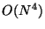
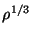
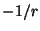
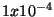
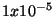
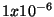
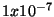
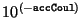

The NWChem density functional theory (DFT) module uses the Gaussian basis set approach to compute closed shell and open shell densities and Kohn-Sham orbitals in the:
The formal scaling of the DFT computation can be reduced by choosing to use auxiliary Gaussian basis sets to fit the charge density (CD) and/or fit the exchange-correlation (XC) potential.
DFT input is provided using the compound DFT directive
DFT
...
END
The actual DFT calculation will be performed when the input module
encounters the TASK directive (Section 5.10).
TASK DFT
Once a user has specified a geometry and a Kohn-Sham orbital basis set the DFT module can be invoked with no input directives (defaults invoked throughout). There are sub-directives which allow for customized application; those currently provided as options for the DFT module are:
VECTORS [[input] (<string input_movecs default atomic>) || \
(project <string basisname> <string filename>)] \
[swap [alpha||beta] <integer vec1 vec2> ...] \
[output <string output_filename default input_movecs>] \
XC [[acm] [b3lyp] [beckehandh] [pbe0]\
[becke97] [becke97-1] [becke97-2] [becke98] [hcth] [hcth120] [hcth147]\
[hcth407] [becke97gga1] [hcth407p]\
[mpw91] [mpw1k] [xft97] [cft97] [ft97] [xpkzb99] [cpkzb99]\
[HFexch <real prefactor default 1.0>] \
[becke88 [nonlocal] <real prefactor default 1.0>] \
[xperdew91 [nonlocal] <real prefactor default 1.0>] \
[xpbe96 [nonlocal] <real prefactor default 1.0>] \
[gill96 [nonlocal] <real prefactor default 1.0>] \
[lyp <real prefactor default 1.0>] \
[perdew81 <real prefactor default 1.0>] \
[perdew86 [nonlocal] <real prefactor default 1.0>] \
[perdew91 [nonlocal] <real prefactor default 1.0>] \
[cpbe96 [nonlocal] <real prefactor default 1.0>] \
[pw91lda <real prefactor default 1.0>] \
[slater <real prefactor default 1.0>] \
[vwn_1 <real prefactor default 1.0>] \
[vwn_2 <real prefactor default 1.0>] \
[vwn_3 <real prefactor default 1.0>] \
[vwn_4 <real prefactor default 1.0>] \
[vwn_5 <real prefactor default 1.0>] \
[vwn_1_rpa <real prefactor default 1.0>]]
CONVERGENCE [[energy <real energy default 1e-7>] \
[density <real density default 1e-5>] \
[gradient <real gradient default 5e-4>] \
[dampon <real dampon default 0.0>] \
[dampoff <real dampoff default 0.0>] \
[diison <real diison default 0.0>] \
[diisoff <real diisoff default 0.0>] \
[levlon <real levlon default 0.0>] \
[levloff <real levloff default 0.0>] \
[ncydp <integer ncydp default 2>] \
[ncyds <integer ncyds default 30>] \
[ncysh <integer ncysh default 30>] \
[damp <integer ndamp default 0>] [nodamping] \
[diis [nfock <integer nfock default 10>]] \
[nodiis] [lshift <real lshift default 0.5>] \
[nolevelshifting] \
[hl_tol <real hl_tol default 0.1>] \
[rabuck [n_rabuck <integer n_rabuck default 25>]]
GRID [(xcoarse||coarse||medium||fine||xfine) default medium] \
[(gausleg||lebedev ) default lebedev ] \
[(becke||erf1||erf2||ssf) default erf1] \
[(euler||mura||treutler) default mura] \
[rm <real rm default 2.0>] \
[nodisk]
TOLERANCES [[tight] [tol_rho <real tol_rho default 1e-10>] \
[accCoul <integer accCoul default 8>] \
[radius <real radius default 25.0>]]
[(LB94||CS00 <real shift default none>)]
DECOMP
ODFT
DIRECT
INCORE
ITERATIONS <integer iterations default 30>
MAX_OVL
MULLIKEN
MULT <integer mult default 1>
NOIO
PRINT||NOPRINT
The following
sections describe these keywords and
optional sub-directives that can be specified for a DFT calculation
in NWChem.
The DFT module requires at a minimum the basis set for the Kohn-Sham
molecular orbitals. This basis set must be in the default basis set named
"ao basis", or it must be assigned to this default name using the
SET directive (see Section 5.7).
In addition to the basis set for the Kohn-Sham orbitals,
the charge density fitting basis set can also be specified in the
input directives for the DFT module. This basis set is used for the
evaluation of the Coulomb potential in the Dunlap scheme11.1.
The charge density fitting basis set must have the name "cd basis".
This can be the actual name of a basis set, or a basis set can be
assigned this name using the SET directive, as described in
Section 5.7. If this basis set is not defined by input,
the  exact Coulomb contribution is computed.
The user also has the option of specifying a third basis set for the evaluation of the exchange-correlation potential. This basis set must have the name "xc basis". If this basis set is not specified by input, the exchange contribution (XC) is evaluated by numerical quadrature. In most applications, this approach is efficient enough, so the "xc basis" basis set is not generally required.
For the DFT module, the input options for defining the basis sets in a given calculation can be summarized as follows;
The VECTORS directive is the same as that in the SCF module
(Section 10.5). Currently, the LOCK keyword
is not supported by the DFT module, however the directive
MAX_OVLhas the same effect.
XC [[acm] [b3lyp] [beckehandh] [pbe0]\
[becke97] [becke97-1] [becke97-2] [becke98] [hcth] [hcth120] [hcth147] \
[hcth407] [becke97gga1] [hcth407p] \
[optx] [hcthp14] [mpw91] [mpw1k] [xft97] [cft97] [ft97]\
[HFexch <real prefactor default 1.0>] \
[becke88 [nonlocal] <real prefactor default 1.0>] \
[xperdew91 [nonlocal] <real prefactor default 1.0>] \
[xpbe96 [nonlocal] <real prefactor default 1.0>] \
[gill96 [nonlocal] <real prefactor default 1.0>] \
[lyp <real prefactor default 1.0>] \
[perdew81 <real prefactor default 1.0>] \
[perdew86 [nonlocal] <real prefactor default 1.0>] \
[perdew91 [nonlocal] <real prefactor default 1.0>] \
[cpbe96 [nonlocal] <real prefactor default 1.0>] \
[pw91lda <real prefactor default 1.0>] \
[slater <real prefactor default 1.0>] \
[vwn_1 <real prefactor default 1.0>] \
[vwn_2 <real prefactor default 1.0>] \
[vwn_3 <real prefactor default 1.0>] \
[vwn_4 <real prefactor default 1.0>] \
[vwn_5 <real prefactor default 1.0>] \
[vwn_1_rpa <real prefactor default 1.0>]]
The user has the option of specifying the exchange-correlation treatment in the DFT Module (see table 11.1). The default exchange-correlation functional is defined as the local density approximation (LDA) for closed shell systems and its counterpart the local spin-density (LSD) approximation for open shell systems. Within this approximation the exchange functional is the Slater  functional (from J.C. Slater, Quantum Theory of Molecules and Solids, Vol. 4: The Self-Consistent Field for Molecules and Solids (McGraw-Hill, New York, 1974)), and the correlation functional is the Vosko-Wilk-Nusair (VWN) functional (functional V) (S.J. Vosko, L. Wilk and M. Nusair, Can. J. Phys. 58, 1200 (1980)). The parameters used in this formula are obtained by fitting to the Ceperley and Alder11.2Quantum Monte-Carlo solution of the homogeneous electron gas.
These defaults can be invoked explicitly by specifying the following
keywords within the DFT module input directive, XC slater vwn_5.
That is, this statement in the input file
dft XC slater vwn_5 end task dft
is equivalent to the simple line
task dft
The DECOMP directive causes the components of the energy
corresponding to each functional to be printed, rather than just the
total exchange-correlation energy which is the default. You can see
an example of this directive in the sample input in
Section 11.5.
Many alternative exchange and correlation functionals are available to the user as listed in table 11.1. The following sections describe how to use these options.
There are several Exchange and Correlation functionals in addition to the default slater and vwn_5 functionals. These are either local or gradient-corrected functionals (GCA); a full list can be found in table 11.1.
The Hartree-Fock exact exchange functional, (which has computation expense), is invoked by specifying
XC HFexch
Note that the user also has the ability to include only the local or
nonlocal contributions of a given functional. In addition the user
can specify a multiplicative prefactor (the variable
<prefactor> in the input) for the local/nonlocal component or
total. An example of this might be,
XC becke88 nonlocal 0.72The user should be aware that the Becke88 local component is simply the Slater exchange and should be input as such.
Any combination of the supported exchange functional options can be used. For example the popular Gaussian B3 exchange could be specified as:
XC slater 0.8 becke88 nonlocal 0.72 HFexch 0.2
Any combination of the supported correlation functional options can be used. For example B3LYP could be specified as:
XC vwn_1_rpa 0.19 lyp 0.81 HFexch 0.20 slater 0.80 becke88 nonlocal 0.72
In addition to the options listed above for the exchange and correlation functionals, the user has the alternative of specifying combined exchange and correlation functionals. A complete list of the available functionals appears in table 11.1.
The available hybrid functionals (where a Hartree-Fock Exchange component is present) consist of the Becke ``half and half'' (see A.D. Becke, J. Chem. Phys. 98, 1372 (1992)), the adiabatic connection method (see A.D. Becke, J. Chem. Phys. 98, 5648 (1993)), B3LYP (popularized by Gaussian9X), Becke 1997 (``Becke V'' paper: A.D.Becke, J. Chem. Phys., 107, 8554 (1997)).
The keyword beckehandh specifies that the exchange-correlation energy will be
computed as
The keyword acm specifies that the exchange-correlation energy
is computed as
The keyword b3lyp specifies that the exchange-correlation energy
is computed as
One way to calculate meta-GGA energies is to use
orbitals and densities
from fully self-consistent GGA or LDA calculations
and run them in one iteration in the meta-GGA functional.
It is expected that meta-GGA energies obtained
this way will be close to fully self consistent
meta-GGA calculations.
This can be easily accomplished in NWChem,
and is illustrated in
the example below.
This kind of calculation
will obviously not converge the energy.
To avoid an error in
the standard Unix output of NWChem,
you must tell NWChem
to ignore
the returned result of the task,
which may be accomplished in the input file
with task dft ignore
You may still get a warning in the output to the effect,
!! warning: dft energy failed.
This simply means the energy failed to converge
since you ran only one iteration of
the functional.
(For more information, see S. Kurth, J. Perdew, P. Blaha, Int. J. Quant. Chem 75, 889 (1999) for a brief description of meta-GGAs, and citations 14-27 therein for thorough background )
Note: both TPSS and PKZB correlation require the PBE GGA CORRELATION (which is itself dependent on an LDA). The decision has been made to use these functionals with the accompanying local PW91LDA. The user does not have the ability to set the local part of these metaGGA functionals.
The keyword LB94 will correct the asymptotic region of
the XC definition of exchange-correlation potential by
the van-Leeuwen-Baerends exchange-correlation potential that
has the correct  asymptotic behavior. The total energy will be computed by the
XC definition of exchange-correlation functional. This scheme is known to
tend to overcorrect the deficiency of most uncorrected exchange-correlation potentials.
The keyword CS00, when supplied with a real value of shift (in atomic units),
will perform Casida-Salahub '00 asymptotic correction. This is primarily intended
for use in conjunction with TDDFT and the background of this method is given in more
detail in Chapter 14. The shift is normally positive (which means that the original
uncorrected exchange-correlation potential must be shifted down).
When the keyword CS00 is specified without the value of shift, the program will
automatically supply it according to the semi-empirical formula of Zhan, Nichols, and
Dixon (again, see Chapter 14 for more details and references). As the Zhan's formula
is calibrated against B3LYP results, it is most meaningful to use this in conjunction
with the B3LYP functional, although the program does not prohibit (or even warn) the use
of any other functional.
Sample input files of asymptotically corrected TDDFT calculations can be found in Chapter 14.
title "WATER 6-311G* meta-GGA X with PBE orbitals" echo geometry units angstroms O 0.0 0.0 0.0 H 0.0 0.0 1.0 H 0.0 1.0 0.0 end basis H library 6-311G* O library 6-311G* end dft print kinetic_energy xc xpbe96 cpbe96 decomp end task dft optimize dft iterations 1 xc xpkzb99 decomp print quadrature kinetic_energy end task dft ignore
Below are the results of the exchange-only meta-GGA calculation part, and as expected we are reminded the calculation was not allowed to converge:
Calculation failed to converge
------------------------------
Total DFT energy = -75.948526603774
One electron energy = -122.899234375708
Coulomb energy = 46.745269703266
Exchange energy = -8.857824284365
Correlation energy = 0.000000000000
Nuclear repulsion energy = 9.063262353032
Numeric. integr. density = 10.000001055407
ITERATIONS <integer iterations default 30>
The default optimization in the DFT module is to iterate on the
Kohn-Sham (SCF) equations for a specified number of iterations
(default 30). The keyword that controls this optimization
is ITERATIONS, and has the following general form,
iterations <integer iterations default 30>
The optimization procedure will stop when the specified number of iterations is reached or convergence is met. See an example that uses this directive in section 11.5.
CONVERGENCE [energy <real energy default 1e-6>] \
[density <real density default 1e-5>] \
[gradient <real gradient default 5e-4>] \
[hl_tol <real hl_tol default 0.1>]
[dampon <real dampon default 0.0>] \
[dampoff <real dampoff default 0.0>] \
[ncydp <integer ncydp default 2>] \
[ncyds <integer ncyds default 30>] \
[ncysh <integer ncysh default 30>] \
[damp <integer ndamp default 0>] [nodamping] \
[diison <real diison default 0.0>] \
[diisoff <real diisoff default 0.0>] \
[(diis [nfock <integer nfock default 10>]) || nodiis] \
[levlon <real levlon default 0.0>] \
[levloff <real levloff default 0.0>] \
[(lshift <real lshift default 0.5>) || nolevelshifting] \
[rabuck [n_rabuck <integer n_rabuck default 25>]]
Convergence is satisfied by meeting any or all of three criteria;
CONVERGENCE energy <real energy default 1e-6>
CONVERGENCE density <real density default 1e-5>
CONVERGENCE gradient <real gradient default 5e-4>
The default optimization strategy is to immediately begin direct inversion of the iterative subspace11.3. Damping is also initiated (using 70% of the previous density) for the first 2 iteration. In addition, if the HOMO - LUMO gap is small and the Fock matrix somewhat diagonally dominant, then level-shifting is automatically initiated. There are a variety of ways to customize this procedure to whatever is desired.
An alternative optimization strategy is to specify, by using the change in total energy (from iterations when N and N-1), when to turn damping, level-shifting, and/or DIIS on/off. Start and stop keywords for each of these is available as,
CONVERGENCE [dampon <real dampon default 0.0>] \
[dampoff <real dampoff default 0.0>] \
[diison <real diison default 0.0>] \
[diisoff <real diisoff default 0.0>] \
[levlon <real levlon default 0.0>] \
[levloff <real levloff default 0.0>]
So, for example, damping, DIIS, and/or level-shifting can be turned on/off as desired.
Another strategy can be to simply specify how many iterations (cycles) you wish each type of procedure to be used. The necessary keywords to control the number of damping cycles (ncydp), the number of DIIS cycles (ncyds), and the number of level-shifting cycles (ncysh) are input as,
CONVERGENCE [ncydp <integer ncydp default 2>] \
[ncyds <integer ncyds default 30>] \
[ncysh <integer ncysh default 0>]
The amount of damping, level-shifting, time at which level-shifting is automatically imposed, and Fock matrices used in the DIIS extrapolation can be modified by the following keywords
CONVERGENCE [damp <integer ndamp default 0>] \
[diis [nfock <integer nfock default 10>]] \
[lshift <real lshift default 0.5>] \
[hl_tol <real hl_tol default 0.1>]]
Damping is defined to be the percentage of the previous iterations density mixed with the current iterations density. So, for example
CONVERGENCE damp 70would mix 30% of the current iteration density with 70% of the previous iteration density.
Level-Shifting11.4 is defined as the
amount of shift applied to the diagonal elements of the unoccupied
block of the Fock matrix. The shift is specified by the
keyword lshift. For example the directive,
CONVERGENCE lshift 0.5causes the diagonal elements of the Fock matrix corresponding to the virtual orbitals to be shifted by 0.5 a.u. By default, this level-shifting procedure is switched on whenever the HOMO-LUMO gap is small. Small is defined by default to be 0.05 au but can be modified by the directive
hl_tol. An example of
changing the HOMO-LUMO gap tolerance to 0.01 would be,
CONVERGENCE hl_tol 0.01
Direct inversion of the iterative subspace with extrapolation of up to 10 Fock matrices is a default optimization procedure. For large molecular systems the amount of available memory may preclude the ability to store this number of N**2 arrays in global memory. The user may then specify the number of Fock matrices to be used in the extrapolation (must be greater than three (3) to be effective). To set the number of Fock matrices stored and used in the extrapolation procedure to 3 would take the form,
CONVERGENCE diis 3
The user has the ability to simply turn off any optimization procedures deemed undesirable with the obvious keywords,
CONVERGENCE [nodamping] [nodiis] [nolevelshifting]
For systems where the initial guess is very poor, the user can try the method described in 11.5that makes use of fractional occupation of the orbital levels during the initial cycles of the SCF convergence. The input has the following form
CONVERGENCE rabuck [n_rabuck <integer n_rabuck default 25>]]
where the optional value n_rabuck determines the number of SCF cycles during which the method will be active. For example, to set equal to 30 the number of cycles where the Rabuck method is active, you need to use the following line
CONVERGENCE rabuck 30
The SMEAR keyword is useful in cases with many degenerate states near the HOMO (eg metallic clusters)
SMEAR <real smear default 0.001>
This option allows fractional occupation of the molecular orbitals.
A Gaussian broadening function of exponent smear is used as described in
the paper:
R.W. Warren RW and B.I. Dunlap, Chem. Phys. Letters 262, 384 (1996).
The user must be aware that an additional energy term is added to the total
energy in order to have
energies and gradients consistent.
GRID [(xcoarse||coarse||medium||fine||xfine) default medium] \
[(gausleg||lebedev ) default lebedev ] \
[(becke||erf1||erf2||ssf) default erf1] \
[(euler||mura||treutler) default mura] \
[rm <real rm default 2.0>] \
[nodisk]
A numerical integration is necessary for the evaluation of the exchange-correlation contribution to the density functional. The default quadrature used for the numerical integration is an Euler-MacLaurin scheme for the radial components (with a modified Mura-Knowles transformation) and a Lebedev scheme for the angular components. Within this numerical integration procedure various levels of accuracy have been defined and are available to the user. The user can specify the level of accuracy with the keywords; xcoarse, coarse, medium, fine, and xfine. The default is medium.
GRID [xcoarse||coarse||medium||fine||xfine]
Our intent is to have a numerical integration scheme which would give us approximately the accuracy defined below regardless of molecular composition.
| Keyword | Total Energy Target Accuracy |
| xcoarse |  |
| coarse |  |
| medium |  |
| fine |  |
| xfine |
In order to determine the level of radial and angular quadrature needed to give us the target accuracy we computed total DFT energies at the LDA level of theory for many homonuclear atomic, diatomic and triatomic systems in rows 1-4 of the periodic table. In each case all bond lengths were set to twice the Bragg-Slater radius. The total DFT energy of the system was computed using the converged SCF density with atoms having radial shells ranging from 35-235 (at fixed 48/96 angular quadratures) and angular quadratures of 12/24-48/96 (at fixed 235 radial shells). The error of the numerical integration was determined by comparison to a ``best'' or most accurate calculation in which a grid of 235 radial points 48 theta and 96 phi angular points on each atom was used. This corresponds to approximately 1 million points per atom. The following tables were empirically determined to give the desired target accuracy for DFT total energies. These tables below show the number of radial and angular shells which the DFT module will use for for a given atom depending on the row it is in (in the periodic table) and the desired accuracy. Note, differing atom types in a given molecular system will most likely have differing associated numerical grids. The intent is to generate the desired energy accuracy (with utter disregard for speed).
| Keyword | Radial | Angular |
| xcoarse | 21 | 194 |
| coarse | 35 | 302 |
| medium | 49 | 434 |
| fine | 70 | 590 |
| xfine | 100 | 1202 |
| Keyword | Radial | Angular |
| xcoarse | 42 | 194 |
| coarse | 70 | 302 |
| medium | 88 | 434 |
| fine | 123 | 770 |
| xfine | 125 | 1454 |
| Keyword | Radial | Angular |
| xcoarse | 75 | 194 |
| coarse | 95 | 302 |
| medium | 112 | 590 |
| fine | 130 | 974 |
| xfine | 160 | 1454 |
| Keyword | Radial | Angular |
| xcoarse | 84 | 194 |
| coarse | 104 | 302 |
| medium | 123 | 590 |
| fine | 141 | 974 |
| xfine | 205 | 1454 |
In addition to the simple keyword specifying the desired accuracy as
described above, the user has the option of specifying a custom
quadrature of this type in which ALL atoms have the same grid
specification. This is accomplished by using the gausleg keyword.
GRID gausleg <integer nradpts default 50> <integer nagrid default 10>
In this type of grid, the number of phi points is twice the number of theta points. So, for example, a specification of,
GRID gausleg 80 20would be interpreted as 80 radial points, 20 theta points, and 40 phi points per center (or 64000 points per center before pruning).
A second quadrature is the Lebedev scheme for the angular components11.6. Within this numerical integration procedure various levels of accuracy have also been defined and are available to the user. The input for this type of grid takes the form,
GRID lebedev <integer radpts > <integer iangquad >In this context the variable iangquad specifies a certain number of angular points as indicated by the table below.11.7
|
The user can also specify grid parameters specific for a given atom type: parameters that must be supplied are: atom tag and number of radial points. As an example, here is a grid input line for the water molecule
grid lebedev 80 11 H 70 8 O 90 11
GRID [(becke||erf1||erf2||ssf) default erf1]
Erf partioning functions
partioning functions
GRID [[euler||mura||treutler] default mura]
NODISK
This keyword turns off storage of grid points and weights on disk.
TOLERANCES [[tight] [tol_rho <real tol_rho default 1e-10>] \
[accCoul <integer accCoul default 8>] \
[radius <real radius default 25.0>]]
The user has the option of controlling screening for the tolerances in
the integral evaluations for the DFT module. In most applications,
the default values will be adequate for the calculation, but different
values can be specified in the input for the DFT module using the
keywords described below.
The input parameter accCoul is used to define the tolerance in Schwarz screening for the Coulomb integrals. Only integrals with estimated values greater than  are evaluated.
TOLERANCES accCoul <integer accCoul default 8>
Screening away needless computation of the XC functional (on the grid) due to negligible density is also possible with the use of,
TOLERANCES tol_rho <real tol_rho default 1e-10>XC functional computation is bypassed if the corresponding density elements are less than
tol_rho.
A screening parameter, radius, used in the screening of the
Becke or Delley spatial weights is also available as,
TOLERANCES radius <real radius default 25.0>where radius is the cutoff value in bohr.
The tolerances as discussed previously are insured at convergence.
More sleazy tolerances are invoked early in the iterative process
which can speed things up a bit. This can also be problematic at
times because it introduces a discontinuity in the convergence
process. To avoid use of initial sleazy tolerances the user can
invoke the tight option:
TOLERANCES tight
This option sets all tolerances to their default/user specified values at the very first iteration.
DIRECT||INCORE NOIO
The inverted charge-density and exchange-correlation matrices
for a DFT calculation are normally written to disk storage. The user
can prevent this by specifying the keyword noio within the
input for the DFT directive. The input to exercise this option is
as follows,
noioIf this keyword is encountered, then the two matrices (inverted charge-density and exchange-correlation) are computed ``on-the-fly'' whenever needed.
The INCORE option is always assumed to be true but can be
overridden with the option DIRECT in which case all integrals
are computed ``on-the-fly''.
ODFT MULT <integer mult default 1>
Both closed-shell and open-shell systems can be studied using
the DFT module. Specifying the keyword MULT within the DFT
directive allows the user to define the spin multiplicity of the system.
The form of the input line is as follows;
MULT <integer mult default 1>When the keyword
MULT is specified, the user can define the integer
variable mult, where mult is equal to the number of alpha
electrons minus beta electrons, plus 1.
The keyword ODFT is unnecessary except in the context
of forcing a singlet system to be computed as an open shell
system (i.e., using a spin-unrestricted wavefunction).
sic [perturbative || oep || oep-loc <default perturbative>]
The Perdew and Zunger (see J. P. Perdew and A. Zunger, Phys. Rev. B 23, 5048 (1981)) method to remove the self-interaction contained in many exchange-correlation functionals has been implemented with the Optimized Effective Potential method (see R. T. Sharp and G. K. Horton, Phys. Rev. 90, 317 (1953), J. D. Talman and W. F. Shadwick, Phys. Rev. A 14, 36 (1976)) within the Krieger-Li-Iafrate approximation (J. B. Krieger, Y. Li, and G. J. Iafrate, Phys. Rev. A 45, 101 (1992); 46, 5453 (1992); 47, 165 (1993)) Three variants of these methods are included in NWChem:
print "SIC information"
MULLIKENWhen this keyword is encountered, Mulliken analysis of both the input density as well as the output density will occur. For example, to perform a mulliken analysis and print the explicit population analysis of the basis functions, use the following
dft mulliken print "mulliken ao" end task dft
Particular care is required to compute BSSE by the counter-poise method for the DFT module. In order to include terms deriving from the numerical grid used in the XC integration, the user must label the ghost atoms not just bq, but bq followed by the given atomic symbol. For example, the first component needed to compute the BSSE for the water dimer, should be written as follows
geometry h2o autosym units au O 0.00000000 0.00000000 0.22143139 H 1.43042868 0.00000000 -0.88572555 H -1.43042868 0.00000000 -0.88572555 bqH 0.71521434 0.00000000 -0.33214708 bqH -0.71521434 0.00000000 -0.33214708 bqO 0.00000000 0.00000000 -0.88572555 end basis H library aug-cc-pvdz O library aug-cc-pvdz bqH library H aug-cc-pvdz bqO library O aug-cc-pvdz end
Please note that the ``ghost'' oxygen atom has been labeled bqO, and not just bq.
PRINT||NOPRINT
The PRINT||NOPRINT options control the level of output in the
DFT. Please see some examples using this directive in
section 11.5, a sample input file.
Known controllable print options are:
|